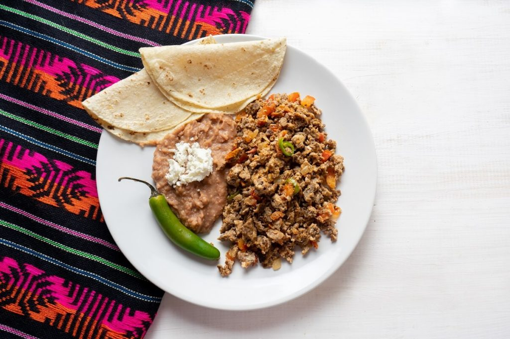
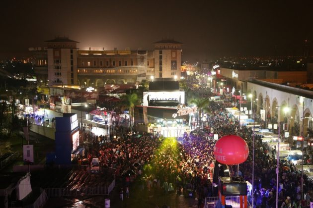
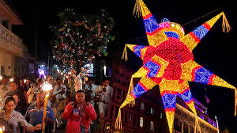
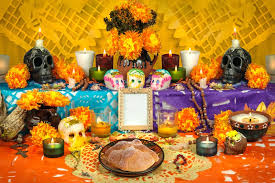
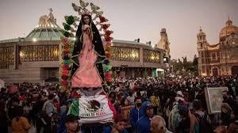

COSTUMBRES
Feria del Machacado
La feria del Machacado es una feria gastronómica en la que la protagonista es la machaca (el platillo que se mencionó en el apartado anterior). En esta feria, se pueden aprender diversos métodos de preparación de este plato: con huevos revueltos, en estofado de tomate, con salsa picante, entre otros. También se puede disfrutar de otros platillos típicos de la región.
Feria de Villaseca
La feria de Villaseca se desarrolla en el municipio Linares, cerca de Monterrey. Esta feria inicia en julio y finaliza en el mes de agosto. El centro de la feria son los charros (también llamados mariachis). Las celebraciones incluyen competencias de mariachis, charreadas (las cuales son rodeos populares), carreras de caballos, paseos en carruajes y cabalgatas. Asimismo, se instalan ferias gastronómicas en las que se pueden disfrutar de platos típicos de la región, tales como las empanadas de calabaza y el dulce de membrillo. También se venden artesanías: cestas, vasijas, bolsos tejidos, sombreros de charros, entre otros.
Las posadas
“Las posadas” es una celebración navideña que inicia el 16 de diciembre y culmina en noche buena. Esta consiste en una procesión en la que las personas se visten con trajes como los que se habrían utilizado en la época en la que nació Jesús. “Los posaderos” van de casa en casa pidiendo alojamiento, tal y como lo hicieron María y José antes de que naciera Jesús. En cada casa, los posaderos reciben dulces y bebidas. Finalmente, en noche buena, una persona de la comunidad les da alojamiento y cenan juntos. En algunas zonas de Nuevo León, se tiene la costumbre de partir una piñata con forma estrellada, que simboliza la estrella de Belén.
Dia de muertos
El día de todos los muertos mezcla creencias prehispánicas con elementos del catolicismo. Se pueden encontrar muestras de celebraciones semejantes al día de los muertos que tienen entre 2500 y 3000 años de antigüedad. Las festividades prehispánicas estaban relacionadas con el culto a la diosa de la Muerte. En la actualidad, el día de los muertos se celebra el 2 de noviembre, coincidiendo con la fiesta católica: el día de los difuntos. La diosa de la Muerte ha sido sustituida por la Catrina, una mujer con cara de calavera que se ha transformado en ícono de esta fiesta. Durante el día de los muertos, las personas hacen altares que contienen los platos y las bebidas favoritas del difunto. Estos altares incluyen arreglos florales y fotos de los fallecidos. Otra tradición es visitar los cementerios para comunicarse con los espíritus de las personas fallecidas y compartir la comida con ellos.
Dia de la Virgen de Guadalupe
El 12 de diciembre se celebra el día de la virgen de Guadalupe en Nuevo León y en todo el territorio mexicano. En estas fechas, se recuerda la aparición de la virgen María en el cerro Tepeyac. Este día se hacen misas en honor a la virgen de Guadalupe, que es la santa patrona de México. Del mismo modo, se llevan a cabo desfiles. Las personas se disfrazan de indios para esta procesión y llevan rosas y otras flores.